Ajinkyatara Devi Temple, Satara
Audumbar Datta Mandir
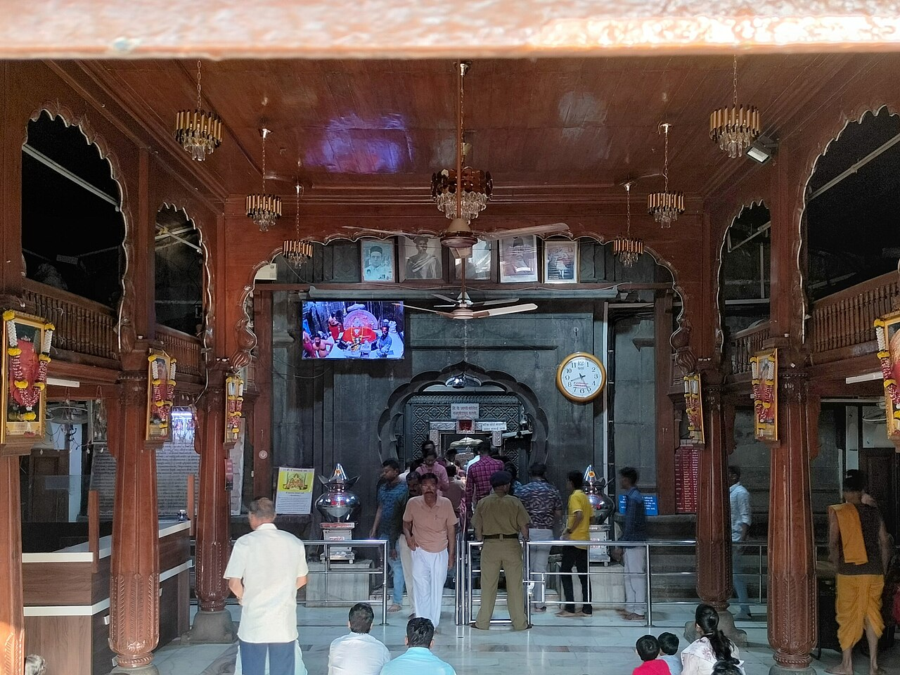
Ballaleshwar Temple, Pali
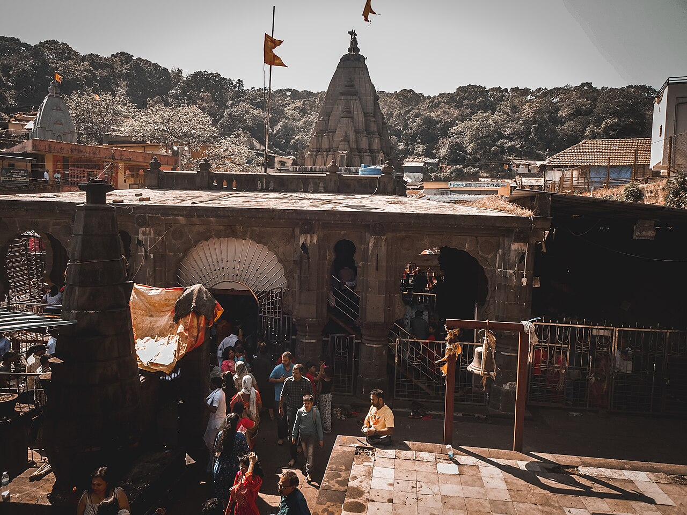
Bhimashankar Temple
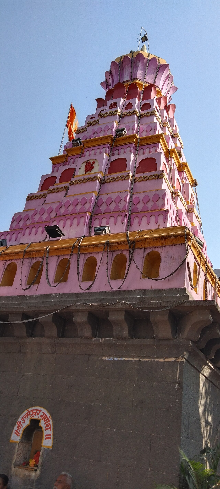
Chintamani Temple, Theur
Ganpati Temple, Sangli
Girijatmaj Temple, Lenyadri

Grishneshwar Temple
Jyotiba Temple, Kolhapur
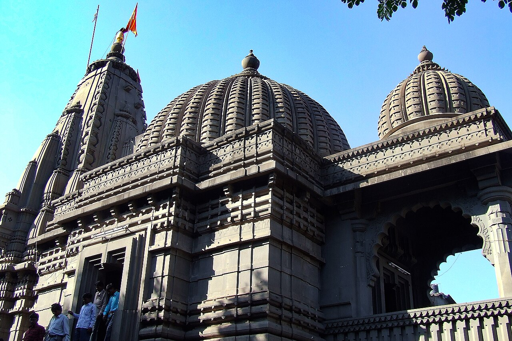
Kalaram Temple, Nashik
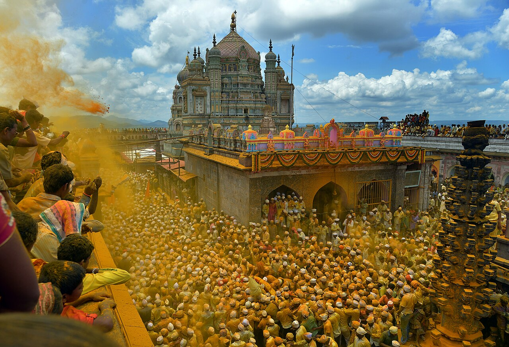
Khandoba Temple, Jejuri
Kopeshwar Temple, Khidrapur
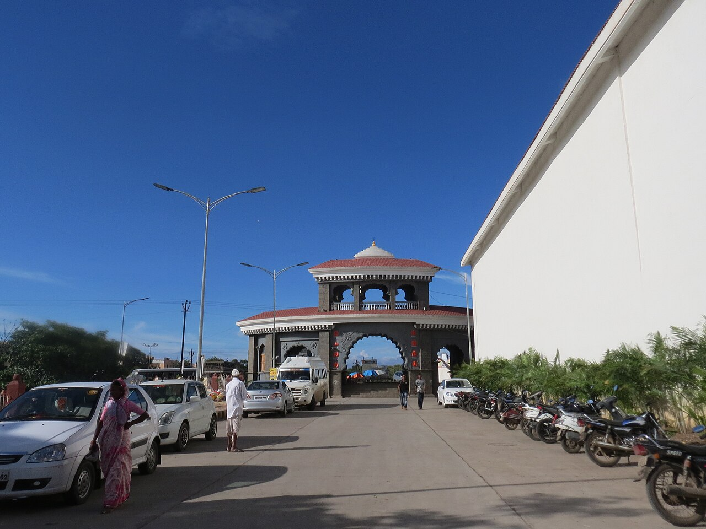
Mahaganapati Temple, Ranjangaon
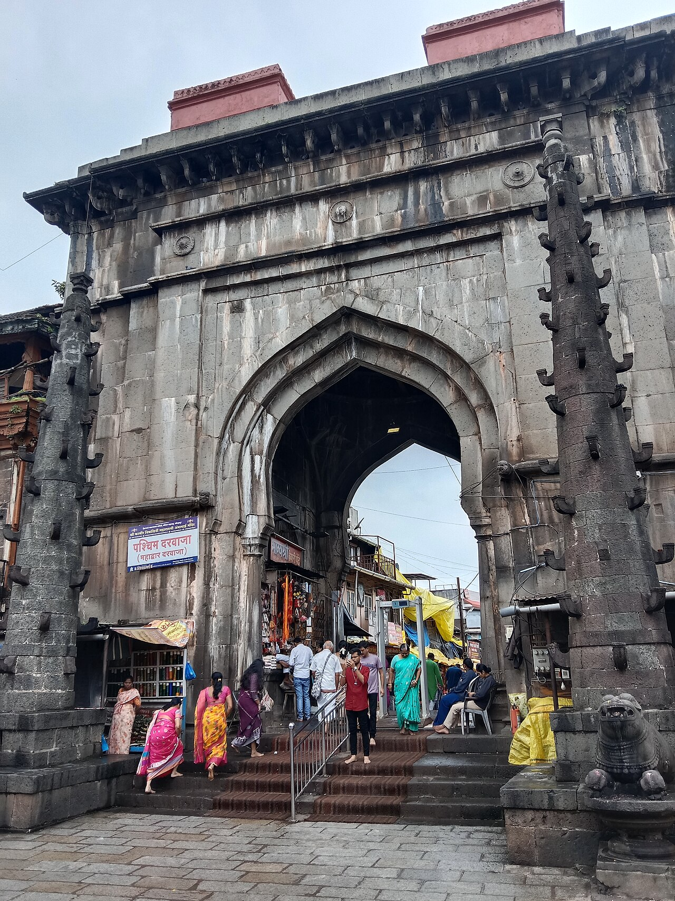
Mahalaxmi Temple, Kolhapur
Moreshwar Temple, Morgaon
Samarth Ramdas Swami Temple, Chaphal
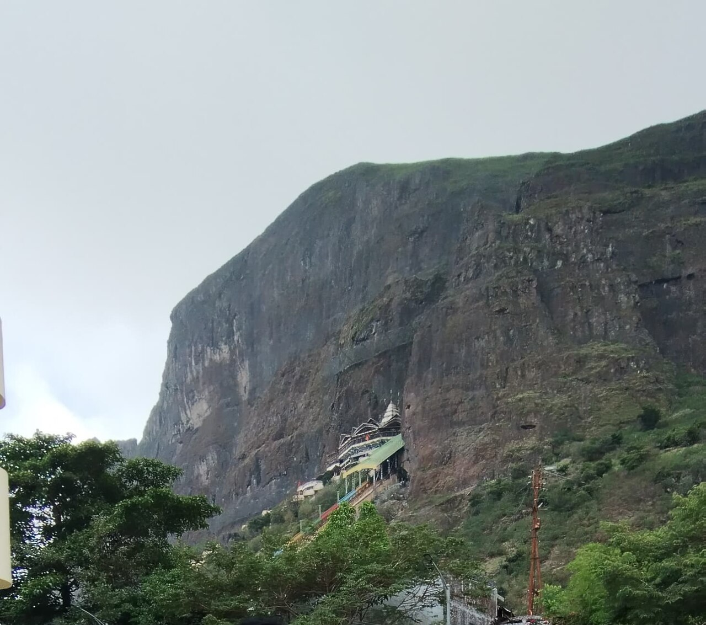
Saptashrungi Temple
Shani Shingnapur Temple
Shri Datta Mandir, Narsobawadi
Shri Mahalakshmi Jagdamba Temple, Koradi
Shri Mangal Dev Grah Mandir, Amalner
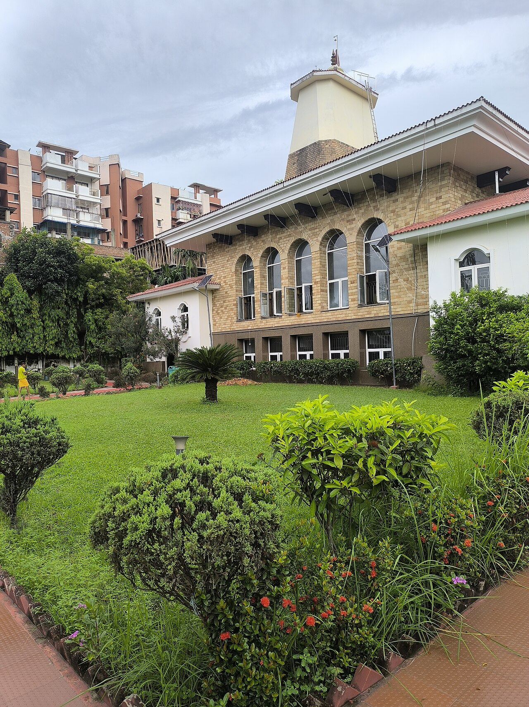
Shri Sai Baba Temple, Shirdi
Shri Swami Samarth Temple, Akkalkot
Siddheshwar Temple, Solapur
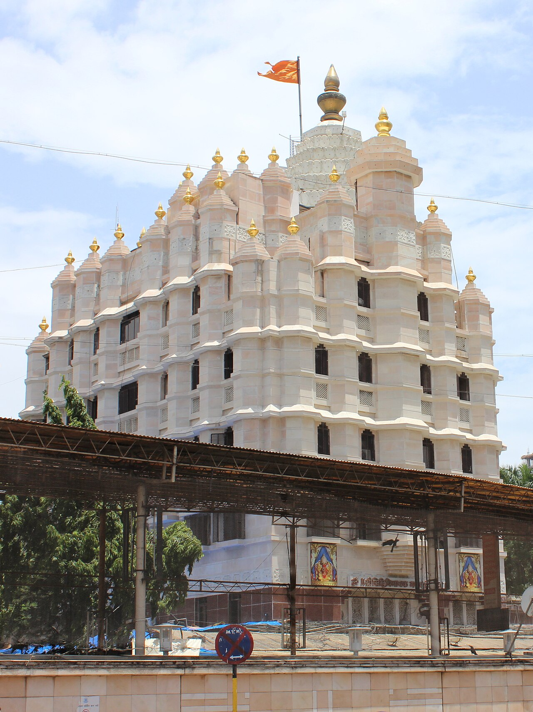
Siddhivinayak Temple, Mumbai
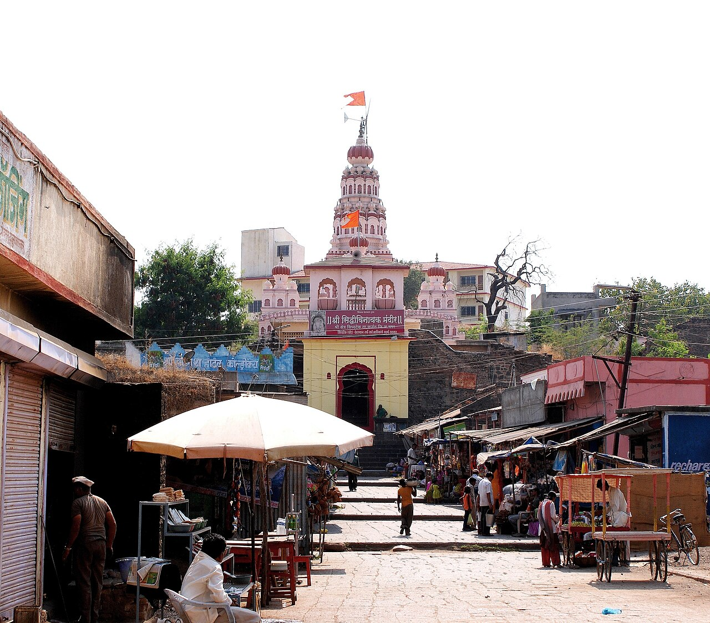
Siddhivinayak Temple, Siddhatek
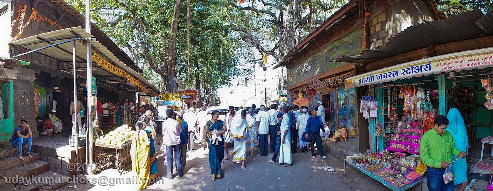
Sita Gufa, Nashik
Swaminarayan Temple, Nagpur
Tekdi Ganesh Temple, Nagpur
Temblai Devi Temple, Kolhapur

Trimbakeshwar Temple
Tulja Bhavani Temple
Varadavinayak Temple, Mahad
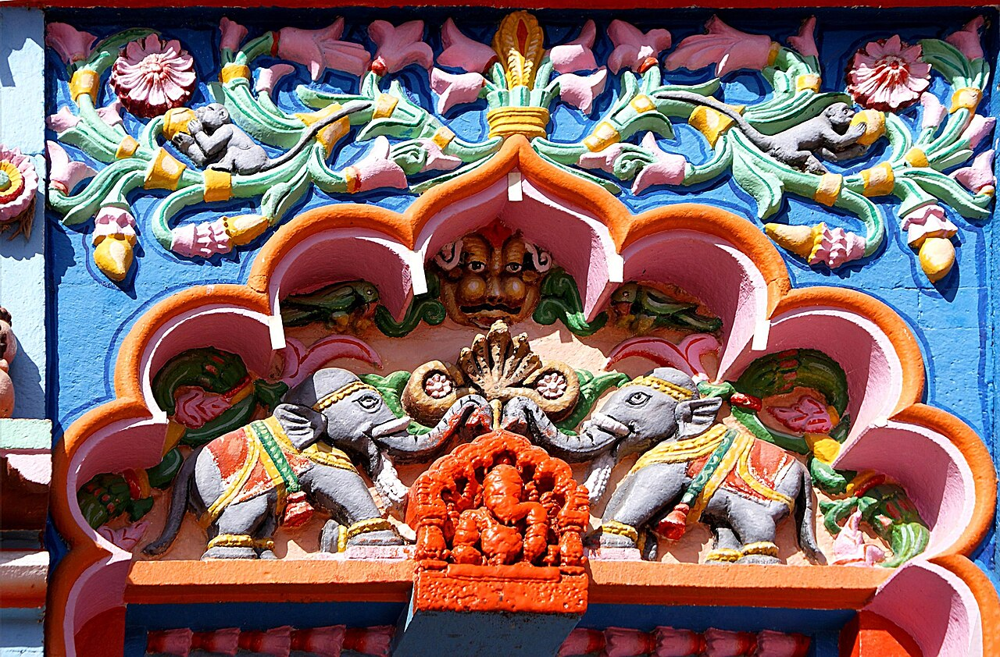
Vighnahar Temple, Ozar
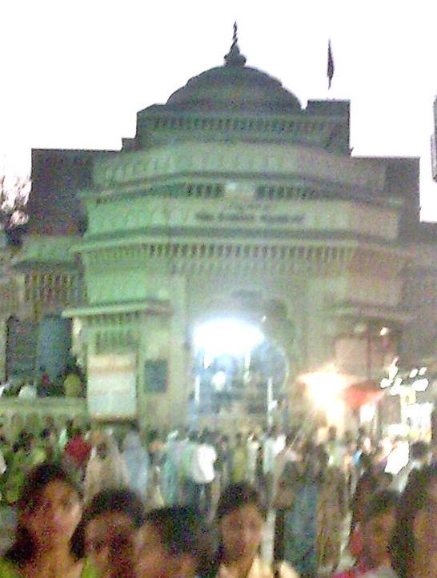